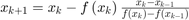

Secant method:

% [root,i,x,error]=secant(@(x) x^5-2*x - 10,1,3, 1,3 ,10^(-14),20); function [root,i,x,error]=secant(f,a,b, x0,x1,tol,n) % SECANT calculates the root of function f. % INPUT % f - function. definded by: syms f(x); f(x) = sin(x^2) % a,b - function range % x0,x1 - intial guesses % tol - maximal error for convergence (tolerance) % n - maximal number of iterations % OUTPUT % x - iterations values % error- iterations errors values % i - number of iterations for convergence % root - the real root, calculated by fsolve. x=zeros(1,n+2); error=zeros(1,n+2); i=0; root = NaN; x(1)=x0; x(2)=x1; roots = fsolve(matlabFunction(f),x1,optimoptions('fsolve','Display','none','TolX',tol)); roots = roots(imag(roots)==0); root = roots(a<=roots & roots<=b); if size(root) ~= 1 disp ('no single root at given range.'); return end for i=3:n+2 x(i) = x(i-1) - (f(x(i-1)))*((x(i-1) - x(i-2))/(f(x(i-1)) - f(x(i-2)))); error(i)=abs(x(i)-root); if error(i) < tol || f(x(i)) == f(x(i-1)) disp (['Secant method converge to the root: ' , num2str(x(i)), ' after ', num2str(i-2), ' steps']); x = x(1:i); error = error(1:i); return end end disp (['Secant method did not converge to the root: ' , num2str(root), ' after ', num2str(i-2), ' steps']); end
Error using secant (line 19) Not enough input arguments.